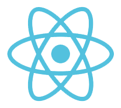
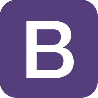
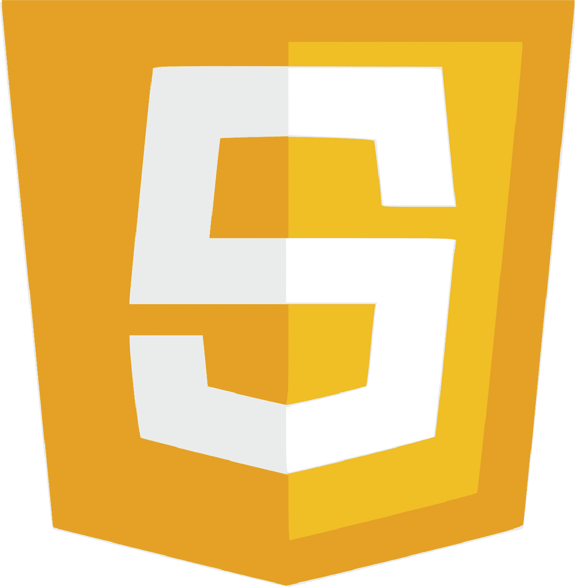

Qui suis-je ?
J'ai 34 ans, je suis passionné d'informatique depuis mon enfance.
Je suis diplomé d'un BTS Informatique de Gestion et d'une formation OpenClassrooms de développeur d'applications back-end python.
Avant cette reconversion, j'ai travaillé plusieurs années dans le milieu du soin et du handicap, ces expériences m'ont permis de développer mon sens du travail en équipe et de l'écoute professionelle.
Je suis actuellement disponible pour participer à de nouveaux projets, je recherche un poste dans la région Nouvelle-Aquitaine et ses alentours.
Mes domaines de compétence
Front



React
Bootstrap
Sass
Back
Django
Flask
PostgreSQL/MySQL
Langage



Python
Javascript
C++